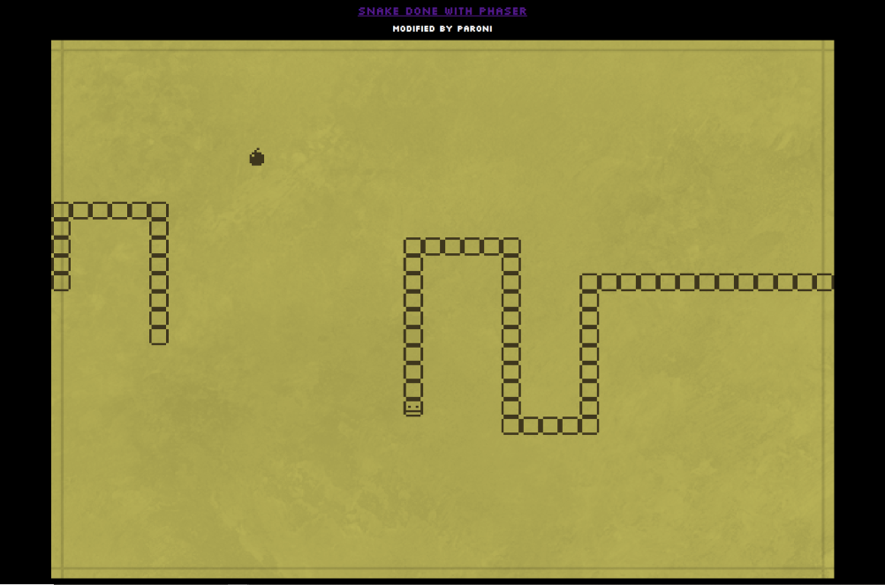

Phaser Snake
About the project
Small solo Snake II knock-off (2021). I followed a tutorial provided by Phaser.io. Probably took around 4-6h in total. All graphical assets and audio is done by me.
Nothing much I can tell you more. Game logic is written with JavaScript. Phaser as a game engine was not my thing, but the turorial was very good!
You can play the game on browser at Itch.io. Link below.